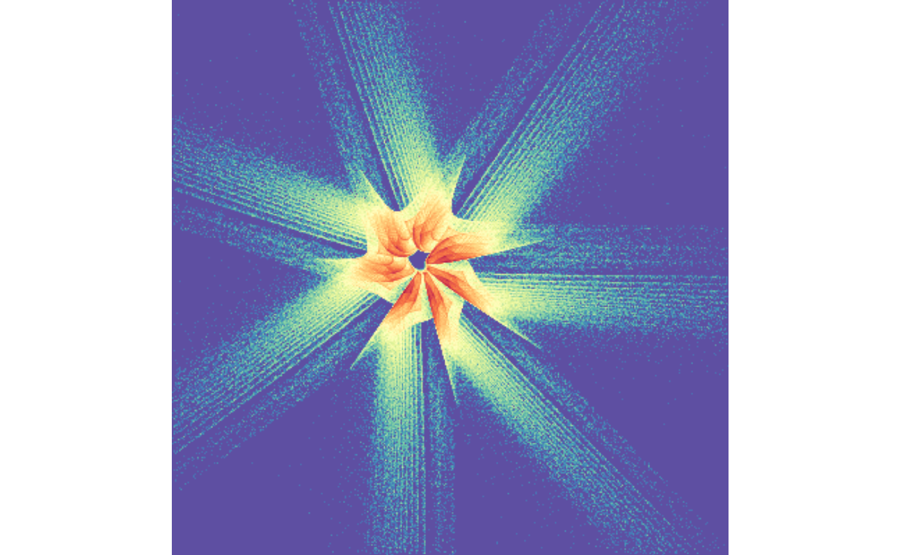

The goal of attractor is to generate and plot strange attractors.
Using this package is fast, because:
- The attractor algorithm uses
Rcppfor speed. - The resulting attractor is discretized (binned) into a much smaller matrix, making plotting very fast.
Installation
You can install the development version from GitHub with:
Example
Create a strange attractor with 10 million points, then discretize to a matrix with dimensions 600 x 900:
Recolour the plot
Use recolour() to change the colours. You can use any of the colours defined by the scales::col_numeric() function. From the help of ?scales::col_numeric():
The palette argument can be any of the following:
A character vector of RGB or named colours. Examples:
palette(),c("#000000", "#0000FF", "#FFFFFF"),topo.colors(10)The name of an
RColorBrewerpalette, e.g."BuPu"or"Greens".A function that receives a single value between 0 and 1 and returns a colour. Examples:
colorRamp(c("#000000", "#FFFFFF"), interpolate="spline").
Use the Oranges palette:

To change the background colour, specify a zero_colour:

You can also invert the palette

Try the Spectral palette:

With inversion:
